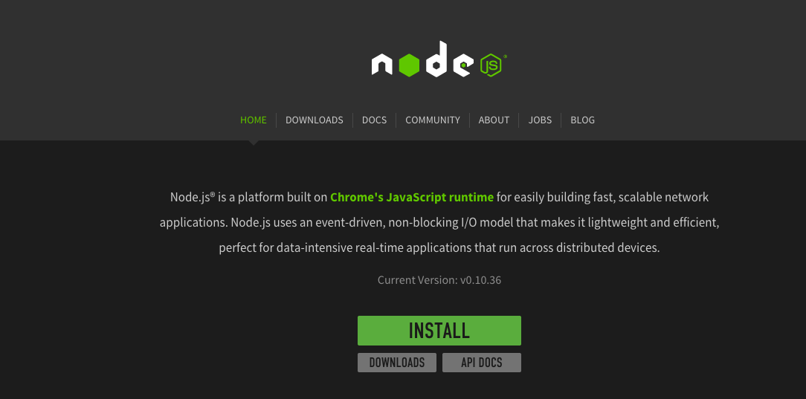
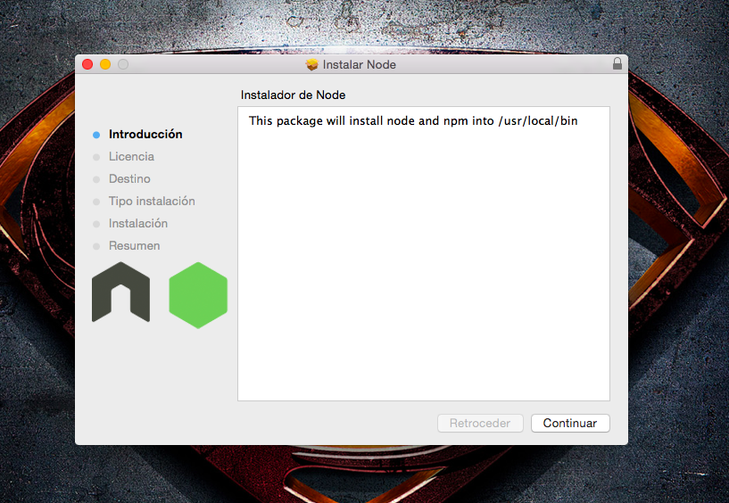
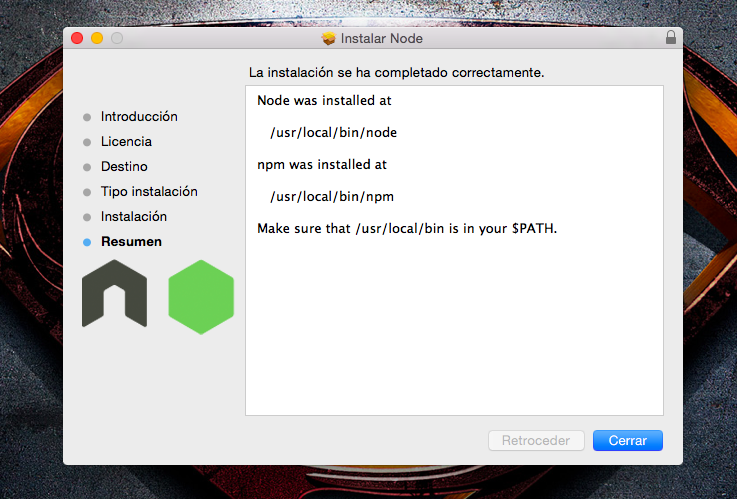
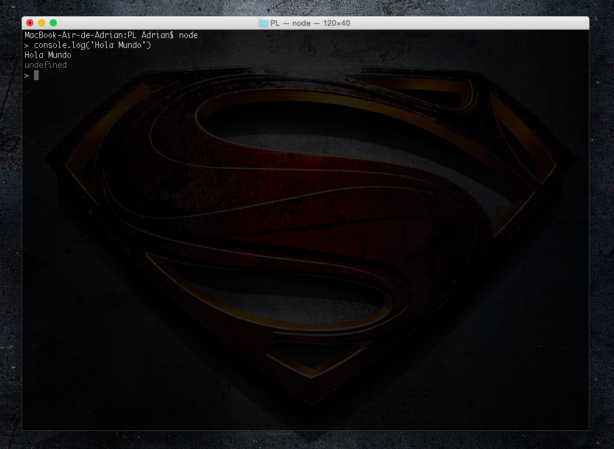
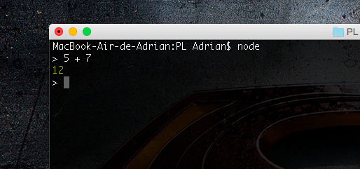

Práctica 1. Tutorial Node.JS
¿Qué es Node.JS?
Node es un intérprete Javascript del lado del servidor. Su meta es permitir a un programador construir aplicaciones altamente escalábles y escribir código que maneje decenas de miles de conexiones simultáneas en una sólo una máquina física.
Instalación de Node.JS en Mac.
- Descargue Node.JS de su página oficial www.nodejs.org 
- Abra el paquete descargado. Se le abrirá una ventana como esta:

- Junto a node se instalará la herramienta 'npm' que se encargará de añadir las nuevas herramientas que el usuario necesite. 
Primeros pasos con Node.JS (Hola Mundo).
- Abra un terminal.
- Escriba la orden "node" para entrar en la consola de node.JS.
- Escriba: "console.log('Hola Mundo')". 
Ejemplo de una suma en node.js.
- Escriba en la consola de node la siguiente sentencia: "5 + 7", verá que obtendrá el resultado de la operación.

Salir de la consola de node.js.
- Presione ctr-c dos veces para salir.

Bibliografía.
- Pérez, Mario. Node.JS - Primeros pasos y "Hola Mundo" | Geeky Theory [En línea].http://geekytheory.com/node-js-primeros-pasos-y-hola-mundo/ [Consulta: Enero 2015].
- Kiessling, Manuel, Junge, Herman. El Libro para Principiantes en Node.js» Un tutorial completo de node.js [En línea].http://www.nodebeginner.org/index-es.html [Consulta: Enero 2015].